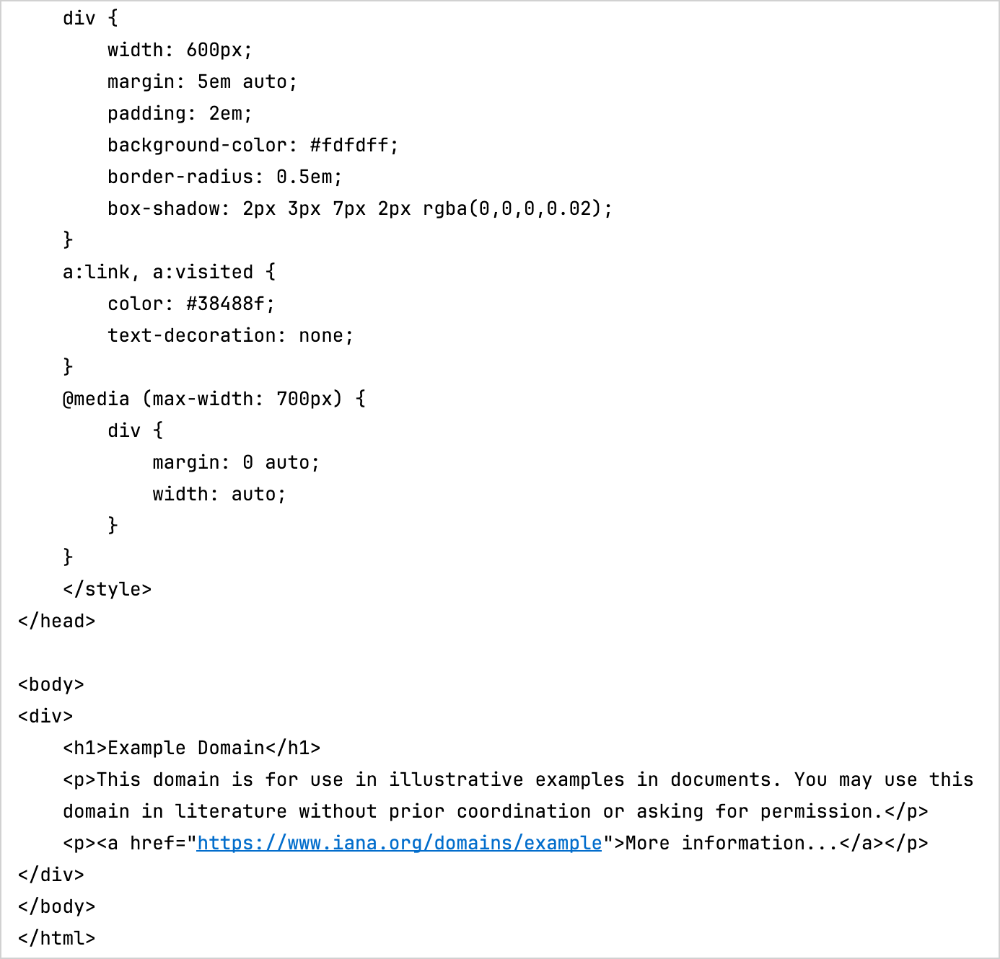

Create an app using C interop and libcurl – tutorial
This tutorial demonstrates how to use IntelliJ IDEA to create a command-line application. You'll learn how to create a simple HTTP client that can run natively on specified platforms using Kotlin/Native and the libcurl library.
The output will be an executable command-line app that you can run on macOS and Linux and make simple HTTP GET requests.
You can use the command line to generate a Kotlin library, either directly or with a script file (such as .sh or .bat file). However, this approach doesn't scale well for larger projects that have hundreds of files and libraries. Using a build system simplifies the process by downloading and caching the Kotlin/Native compiler binaries and libraries with transitive dependencies, as well as by running the compiler and tests. Kotlin/Native can use the Gradle build system through the Kotlin Multiplatform plugin.
Before you start
Download and install the latest version of IntelliJ IDEA.
Clone the project template by selecting File | New | Project from Version Control in IntelliJ IDEA and using this URL:
https://github.com/Kotlin/kmp-native-wizard
Explore the project structure:
The template includes a project with the files and folders you need to get started. It's important to understand that an application written in Kotlin/Native can target different platforms if the code does not have platform-specific requirements. Your code is placed in the nativeMain directory with a corresponding nativeTest. For this tutorial, keep the folder structure as is.
Open the build.gradle.kts file, the build script that contains the project settings. Pay special attention to the following in the build file:
kotlin {
val hostOs = System.getProperty("os.name")
val isArm64 = System.getProperty("os.arch") == "aarch64"
val isMingwX64 = hostOs.startsWith("Windows")
val nativeTarget = when {
hostOs == "Mac OS X" && isArm64 -> macosArm64("native")
hostOs == "Mac OS X" && !isArm64 -> macosX64("native")
hostOs == "Linux" && isArm64 -> linuxArm64("native")
hostOs == "Linux" && !isArm64 -> linuxX64("native")
isMingwX64 -> mingwX64("native")
else -> throw GradleException("Host OS is not supported in Kotlin/Native.")
}
nativeTarget.apply {
binaries {
executable {
entryPoint = "main"
}
}
}
}
Targets are defined using macosArm64, macosX64, linuxArm64, linuxX64, and mingwX64 for macOS, Linux, and Windows. See the complete list of supported platforms.
The entry itself defines a series of properties to indicate how the binary is generated and the entry point of the applications. These can be left as default values.
C interoperability is configured as an additional step in the build. By default, all the symbols from C are imported to the interop package. You may want to import the whole package in .kt files. Learn more about how to configure it.
Create a definition file
When writing native applications, you often need access to certain functionalities that are not included in the Kotlin standard library, such as making HTTP requests, reading and writing from disk, and so on.
Kotlin/Native helps consume standard C libraries, opening up an entire ecosystem of functionality that exists for pretty much anything you may need. Kotlin/Native is already shipped with a set of prebuilt platform libraries, which provide some additional common functionality to the standard library.
An ideal scenario for interop is to call C functions as if you are calling Kotlin functions, following the same signature and conventions. This is when the cinterop tool comes in handy. It takes a C library and generates the corresponding Kotlin bindings, so that the library can be used as if it were Kotlin code.
To generate these bindings, each library needs a definition file, usually with the same name as the library. This is a property file that describes exactly how the library should be consumed.
In this app, you'll need the libcurl library to make some HTTP calls. To create its definition file:
Select the src folder and create a new directory with File | New | Directory.
Name the new directory nativeInterop/cinterop. This is the default convention for header file locations, though it can be overridden in the build.gradle.kts file if you use a different location.
Select this new subfolder and create a new libcurl.def file with File | New | File.
headers is the list of header files to generate Kotlin stubs for. You can add multiple files to this entry, separating each with a space. In this case, it's only curl.h. The referenced files need to be available on the specified path (in this case, it's /usr/include/curl).
headerFilter shows what exactly is included. In C, all the headers are also included when one file references another one with the #include directive. Sometimes it's not necessary, and you can add this parameter using glob patterns to make adjustments.
You can use headerFilter if you don't want to fetch external dependencies (such as system stdint.h header) into the interop library. Also, it may be useful for library size optimization and fixing potential conflicts between the system and the provided Kotlin/Native compilation environment.
If the behavior for a certain platform needs to be modified, you can use a format like compilerOpts.osx or compilerOpts.linux to provide platform-specific values to the options. In this case, they are macOS (the .osx suffix) and Linux (the .linux suffix). Parameters without a suffix are also possible (for example, linkerOpts=) and applied to all platforms.
For the full list of available options, see Definition file.
Add interoperability to the build process
To use header files, make sure they are generated as a part of the build process. For this, add the following entry to the build.gradle.kts file:
First, cinterops is added, and then an entry for a definition file. By default, the name of the file is used. You can override this with additional parameters:
cinterops {
val libcurl by creating {
definitionFile.set(project.file("src/nativeInterop/cinterop/libcurl.def"))
packageName("com.jetbrains.handson.http")
compilerOpts("-I/path")
includeDirs.allHeaders("path")
}
}
Write the application code
Now that you have the library and the corresponding Kotlin stubs, you can use them from your application. For this tutorial, convert the simple.c example to Kotlin.
In the src/nativeMain/kotlin/ folder, update your Main.kt file with the following code:
import kotlinx.cinterop.*
import libcurl.*
@OptIn(ExperimentalForeignApi::class)
fun main(args: Array<String>) {
val curl = curl_easy_init()
if (curl != null) {
curl_easy_setopt(curl, CURLOPT_URL, "https://example.com")
curl_easy_setopt(curl, CURLOPT_FOLLOWLOCATION, 1L)
val res = curl_easy_perform(curl)
if (res != CURLE_OK) {
println("curl_easy_perform() failed ${curl_easy_strerror(res)?.toKString()}")
}
curl_easy_cleanup(curl)
}
}
As you can see, explicit variable declarations are eliminated in the Kotlin version, but everything else is pretty much the same as the C version. All the calls you'd expect in the libcurl library are available in the Kotlin equivalent.
Compile and run the application
Compile the application. To do that, run the runDebugExecutableNative Gradle task from the task list or use the following command in the terminal:
./gradlew runDebugExecutableNative
In this case, the part generated by the cinterop tool is implicitly included in the build.
If there are no errors during compilation, click the green Run icon in the gutter next to the main() function or use the Shift + Cmd + R/Shift + F10 shortcut.
IntelliJ IDEA opens the Run tab and shows the output — the contents of example.com:

You can see the actual output because the call curl_easy_perform prints the result to the standard output. You could hide this using curl_easy_setopt.